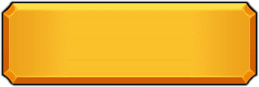
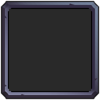
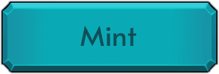
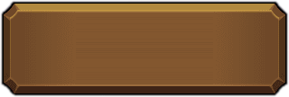

TAMBANG 1
Terkunci · buka untuk melihat isinya

BUKA
Tambang

B
1
2
3
4
5
—
+
—
+

LIFT
🔥 FURNACE
🌲 HUTAN
PRODUKSI
⚡ BOOST SEMUA

GUDANG
0
🎒 INVENTORI
⬆ UPGRADE
⚡
Kayu
Batu
Kristal
Deep
Ancient
Mystery
Pekerja
Kereta
Obor
Kotak
Batu
Mineral
Slot
Reset Tambang
Semua objek kembali ke susunan awal. Lanjutkan?
Batal
Reset
 TAMBANG 1
TAMBANG 1